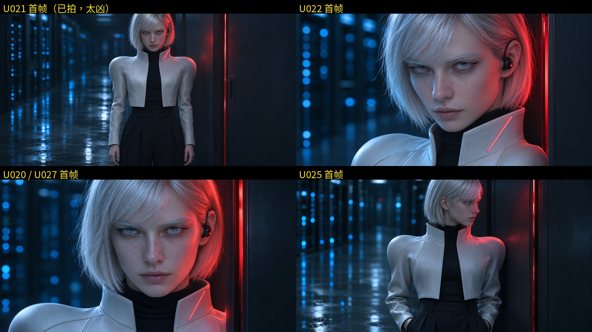
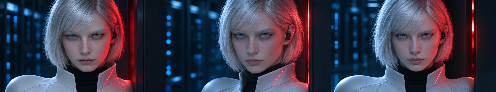

身份参考图 E3-close-a：低头、抬眼、压眉

旧数字人首帧（U021 / U022 / U020·U027 / U025）

刚生成的「平静版」三张：提示词改了，但仍套用 E3 参考图，凶相还在（不采用）

EV 作者的做法
- 人物常态神情：deadpan, curious（面无表情、带点好奇）；唱歌时嘴张开、眼睛闭上
- 出图不用脸部参考图，身份靠一段固定文字锁定
- 唱歌镜头的首帧本身就在唱（闭眼张嘴）
- 对口型用 Seedance 2.5：首帧 + 该段人声，提示词写明唱的词、神情和“镜头锁定、不切、不转头”；口型开始不同步处剪掉，再接续拍